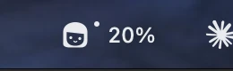
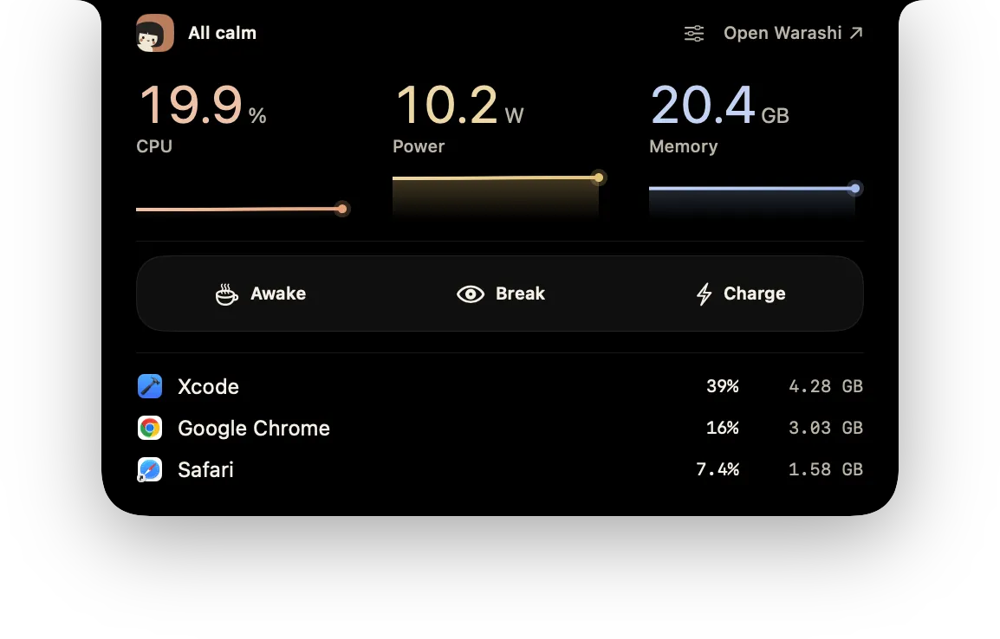
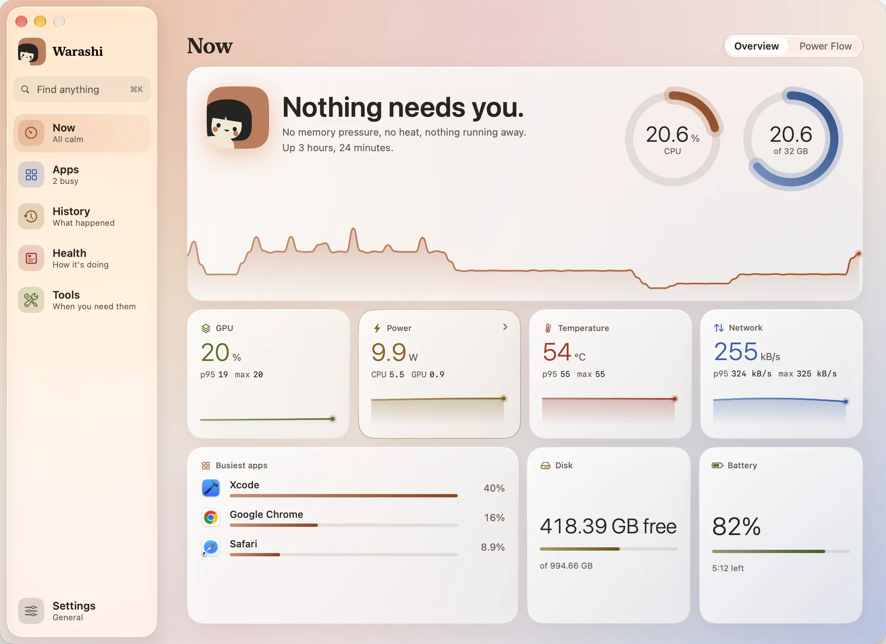

Warashi empieza a medir en cuanto se abre. Este es un breve recorrido por los lugares que más usarás y lo que puedes esperar en los días siguientes.
- Echa un vistazo a la barra de menús
El número junto al espíritu está en directo. Si se convierte en un aviso con ▲, algo requiere tu atención: haz clic para ver qué.

- Haz clic en el espíritu
Se abre la ventana de la barra de menús: CPU y memoria como anillos del último minuto, una fila de acciones de un clic (mantener tu Mac activo, hacer una pausa, probar tu internet, cargar completamente), tus otras lecturas y las apps más activas. Más en Barra de menús y ventana de la barra de menús.


La ventana de la barra de menús. - Pasa el puntero por la muesca
En un MacBook con muesca, deja el puntero un momento sobre la muesca y se abre como un minipanel. Aparta el puntero y se cierra. Más en Muesca e isla.

La muesca, abierta. - Abre la ventana
Pulsa ⌘O o Abrir en la ventana de la barra de menús, o haz clic en la muesca abierta. La ventana se abre en Ahora. La barra lateral tiene cinco apartados, Ahora, Apps, Historial, Salud y Herramientas, con Ajustes al final. Consulta Cómo orientarte.


La ventana se abre en Ahora. - Déjalo registrar
Deja Warashi en marcha. El Historial se llena desde el primer minuto, Chequeo valora tu Mac a partir de la última semana, el Asesor de renovación ofrece un primer vistazo a los 7 días y su informe completo a los 30, y Tiempo × Coste muestra tus días si activaste el registro de actividad.
Atajos de teclado
| Teclas | Dónde | Qué hace |
|---|---|---|
| ⌘O | Ventana de la barra de menús | Abre la ventana |
| ⌘K | Ventana | Buscar lo que sea: una página o una acción |
| ⌘1–⌘5 | Ventana | Ahora, Apps, Historial, Salud, Herramientas |
| ⌘, | Ventana de la barra de menús o ventana | Ajustes |
| ⌃⌥⌘B | En cualquier lugar, si lo activas | Iniciar una pausa (Ajustes › Pausas) |
| ⌃⌥⌘K | En cualquier lugar, si lo activas | Mantener activo, activado o desactivado (menú Mantener activo) |
| Esc | Ventana de la barra de menús, panel de una app, una pausa | Cerrar u omitir |